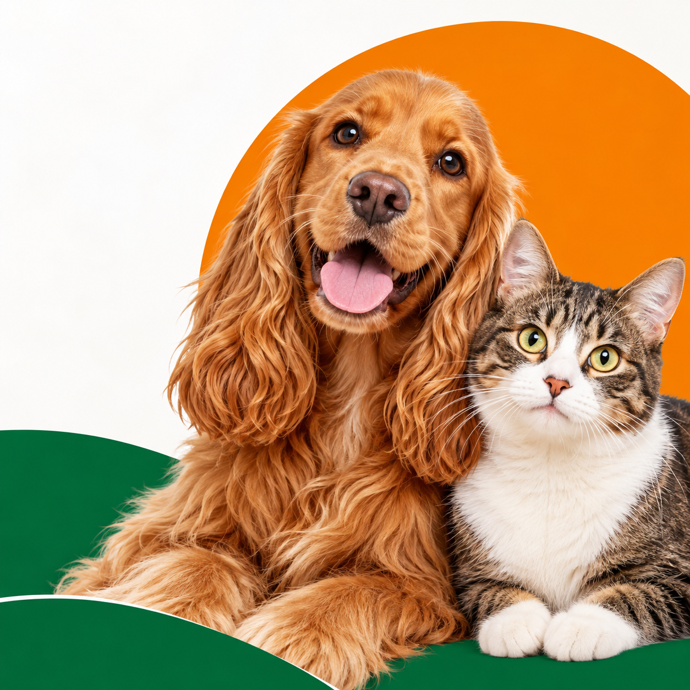
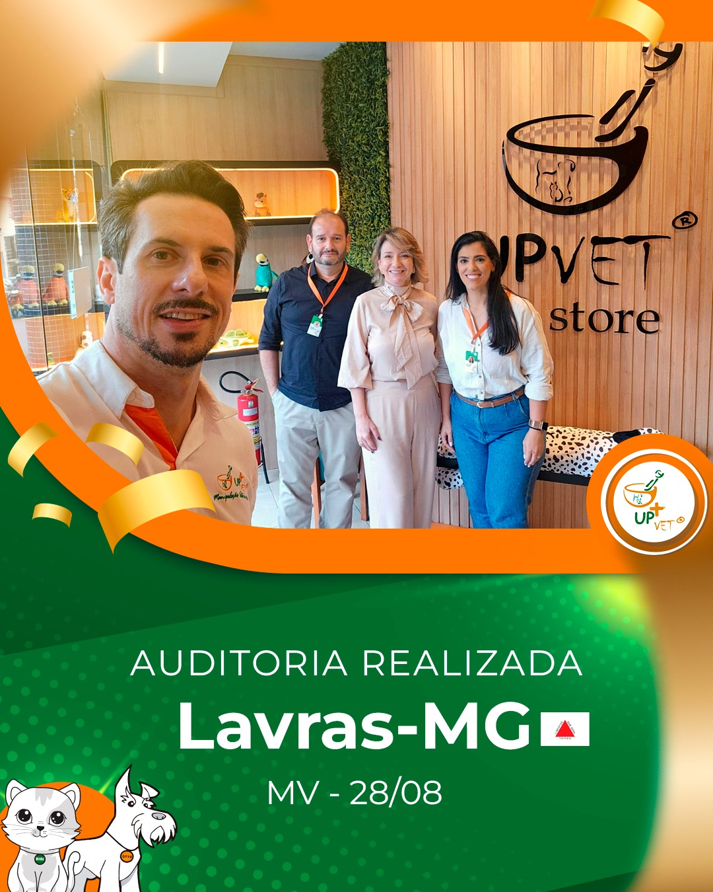

Nem todo cuidado
vem em cápsula.
Biscoito, suspensão, pasta aromatizada, cápsula e outras apresentações fazem parte do catálogo da rede. A escolha depende da receita e da avaliação farmacêutica.
Tenho uma receitaMedicamentos exclusivamente veterinários, preparados a partir da receita do seu pet. Conheça as apresentações e solicite seu orçamento à equipe de Lavras.

Do formato à preferência de sabor: explore o que você pode conversar com a equipe antes de solicitar o preparo.
Biscoito, suspensão, pasta aromatizada, cápsula e outras apresentações fazem parte do catálogo da rede. A escolha depende da receita e da avaliação farmacêutica.
Tenho uma receitaFrango, bacon, carne, peixe e picanha são referências divulgadas pela unidade. A compatibilidade com cada fórmula é confirmada pela equipe.
Preferência selecionada: Frango. Sujeita à análise da fórmula.
Consultar essa preferênciaOrganize a prescrição e as observações para a equipe de Lavras. Apresentação, concentração, quantidade e viabilidade são avaliadas pela farmácia.

A unidade de Lavras integra a UPVET Sul de Minas e aproxima a manipulação veterinária dos tutores e profissionais da região.
O perfil da unidade reúne a inauguração, encontros com veterinários e o acompanhamento da rede. Conheça esses registros no Instagram.
Produtos de higiene e cosméticos do catálogo oficial da rede. Consulte a disponibilidade em Lavras.

250 ml · Produto pronto
R$ 32,90Preço fictício para teste
250 ml · Produto pronto
R$ 39,90Preço fictício para teste
120 ml · Produto pronto
R$ 27,90Preço fictício para teste
200 ml · Produto pronto
R$ 34,90Preço fictício para testeA rede também apresenta condicionador e perfume South Spring, perfume Baby Pet, limpa lágrimas, deo colônia e produtos para ambientes. Veja a linha oficial UPVET ou consulte a unidade. Preços exibidos são fictícios para testar o site, não são ofertas da UPVET. Estoque e valores reais devem ser confirmados com a unidade.
Horários e funcionamento em feriados: confirme no WhatsApp antes da visita.
Anexe uma receita de teste, revise os dados e acompanhe o pedido no painel de demonstração.
Solicitar manipulaçãoO orçamento e o preparo dependem da avaliação da receita pela farmácia.